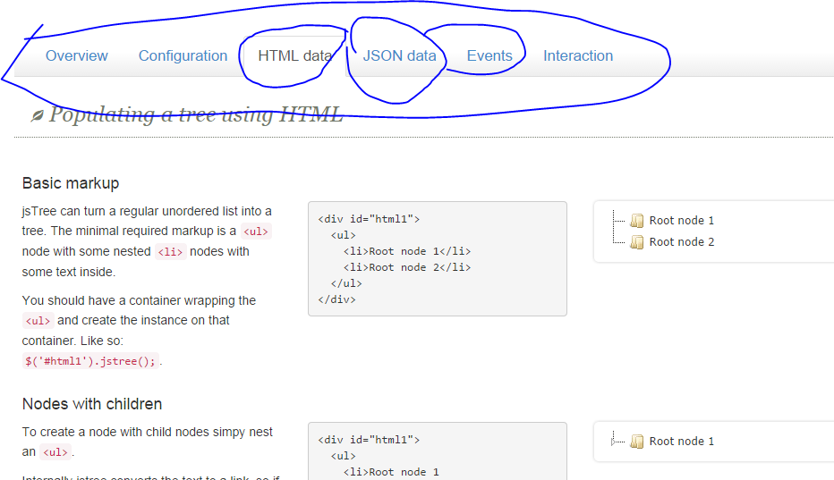

jstree
jstree 是一個 jQuery tree 插件 官網 http://www.jstree.com/docs/html/
獲取支持
1 從官網下載最新版本 vakata-jstree-3.0.4-0-gaa240c1.zip 並解壓
2 /dist/ 中所有 文件 放入項目
3 <link rel="stylesheet" href="dist/themes/default/style.min.css" />
<script src="dist/jstree.min.js"></script>
4 $('#jstree_demo_div').jstree();
詳見 docs/index.html
